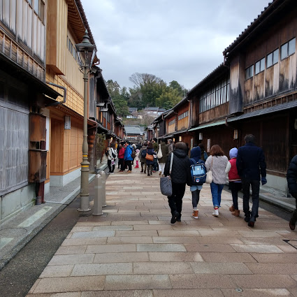
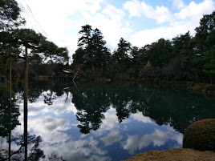
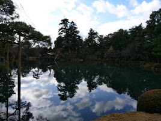

江戸時代には、江戸幕府（約800万石と言われる）を除いて、
大名中最大の102万5千石の石高を領した加賀藩（「加賀百万石」）の城下町として栄えました。
金箔が有名で、それを使った伝統工芸品が多くあります。
城下町として栄えた過去を持つ金沢。
その風情を十分に感じることができます。
ですが、それだけではありません。
金沢駅、そして金沢21世紀美術館など、近代的な面も。
双方の魅力を味わえるのは金沢ならではと言えるでしょう。
まずは、金沢駅へ。大きな迫力のある鼓門が出迎えてくれます。
銀行をリノベーションしたレストランで、大正ロマンを味わうことができます。
重要伝統的建造物群保存地区に指定されている、きれいな街並みを観光。
フォトジェニックな場所もあり、たくさん写真を撮りたくなること間違いなし。
有名な金箔ソフトクリームもおすすめです。
日本三大庭園の１つである兼六園。
当時の加賀藩主が金沢城の隣に別荘として建てたことが発祥だそう。
春夏秋冬で違った姿を見せてくれるので、何度訪れても楽しめるはず。
 

新鮮な魚介類、果物などが揃う市場。
新鮮な海鮮丼は絶品！